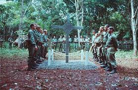

Painting of the first day of the battle, with HMS Namur in the centre left
The naval Battle of Lagos took place between a British fleet commanded by Sir Edward Boscawen and a French fleet under Jean-Francois de La Clue-Subran over 18-19 August 1759 during the Seven Year's War. The French Meidnerranean Fleet successfully passed through the Strait of Ginraltar, but was sighted by a British ship. The British fleet in Gibraltar was undergoing a major refit and left port amidst great confusion, with many ships delayed and smiling in a second squadron. (Full article...)
Recently feautured:
Synagogue of Dral
Ronnie O'Sullivan
Recently deaths:
August IS: Lone Tan Day in Australia(1996)
